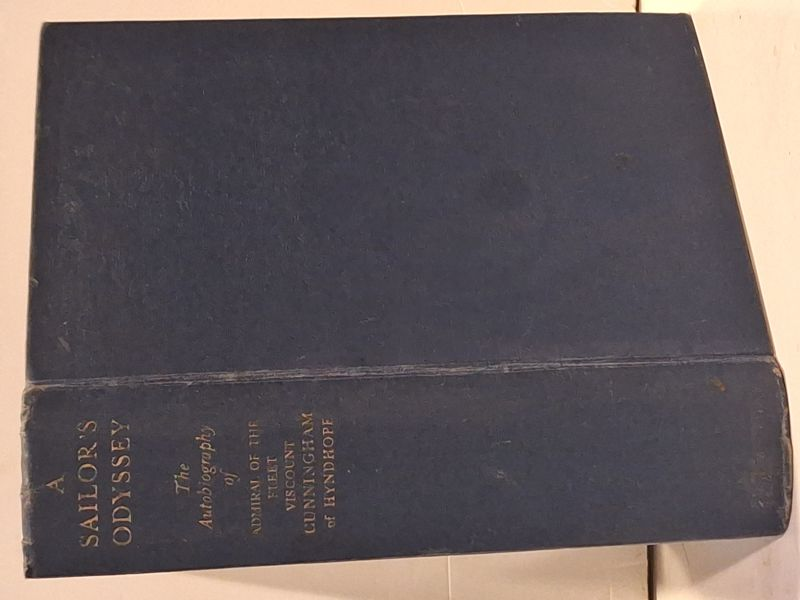

A Sailor's Odyssey
Cunningham of Hyndhope, Viscount (Admiral of the Fleet, Andrew Browne Cunningham) · Hutchinson & Co., London, 1951

C$28 · Good condition
Hutchinson & Co. (Publishers) Ltd, London / New York / Sydney / Melbourne / Cape Town, 1951. Second impression (first published March 1951, reprinted April 1951). The autobiography of Admiral of the Fleet Andrew Browne Cunningham, Viscount Cunningham of Hyndhope, K.T., G.C.B., O.M., D.S.O. - Britain's foremost naval commander of the Second World War: victor of the Battle of Cape Matapan (March 1941), architect of the Mediterranean campaign, evacuator of Crete, and First Sea Lord 1943-1946. With 16 maps and 46 photographs. Printed by Greycaines (Taylor Garnett Evans & Co. Ltd.), Watford. Original dark navy cloth boards, plain front, gilt spine. No dust jacket. Mild head-of-spine fraying and light rubbing to gilt; boards otherwise clean and square; tight binding, clean text block.
Details
- Publisher: Hutchinson & Co., London, 1951
- Binding: Hardcover
- Edition: Second Impression (First Published March 1951, Reprinted April 1951)
- Condition: Good
- Category: Military